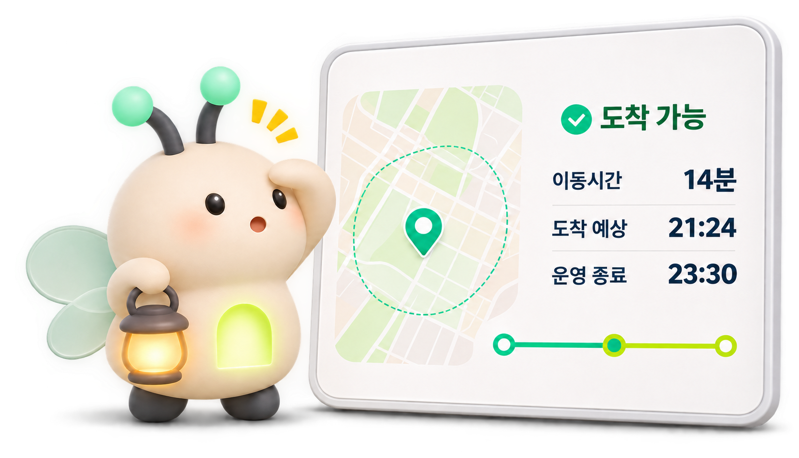

지금 열려 있는 곳보다,
도착할 때도 열려 있는 곳.
운영시간과 이동시간을 함께 보고,
지금 갈 수 있는 병원·약국을 찾아드려요.

도착 시간을 함께 보는 이유.
출발
이동
도착 예상
운영 종료
출발할 때 열려 있어도, 이동하는 동안 문을 닫을 수 있어요.
찾는 동안, 도키가 차근차근 확인해요.
필요한 정보만한눈에.
열려있DOC
판교 별빛약국경기 성남시 분당구 판교역로
✓ 도착 가능
예상 주행14분
도착 예상21:24
운영 종료23:30
저장한 계획은 다시 꺼내볼 수 있어요.
출발 시각을 바꾸거나, 일정이 겹치는지도 확인해요.
11월 19일목요일
11월 20일금요일
판교 달빛의원병원
- 출발
- 21:15
- 도착
- 21:29
- 소요
- 14분
! 같은 날짜에 시간이 겹치는 계획이 있어요.
판교 별빛약국약국
- 출발
- 21:40
- 도착
- 21:54
- 소요
- 14분
공개 운영정보와 예상 이동시간을 바탕으로 안내해요.
실제 운영 및 접수 여부는 방문 전 기관에 확인해 주세요.도착할 때도 열려 있는 곳,
지금 찾아보세요.
지금 출발하면,
어디까지 열려 있을까요?
출발 시각과 자동차 이동시간을 계산해 도착할 때도 운영하는 병원·약국을 찾아드려요.
도착 예측 미리보기
후보의 이동시간과 운영 종료 시각을 함께 비교해요.
탐색 과정
요청을 입력하면 순서대로 확인합니다.- 1출발지 확인장소와 좌표 확인
- 2주변 후보 조회병원·약국 후보 탐색
- 3운영시간 확인방문일 운영 구간 확인
- 4자동차 경로 계산실제 예상 주행시간 확인
- 5추천 완료도착 시점 조건 판단
기관명, 주소, 예상 도착, 운영 종료와 선택 근거를 한눈에 확인할 수 있어요.
도착 가능
예상 주행—
예상 도착—
운영 종료—
SAVED VISITS
저장한 방문 계획
방문 전 기관에 실제 운영 및 접수 여부를 확인해 주세요.
저장된 방문 계획을 불러오는 중입니다.